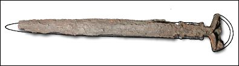

The Challenge -
Sword

Swords had various shapes. They could have a broad straight blade for cutting, thrusting and slashing, or have a curved blade which was believed to produce a deeper wound. The earliest swords were made from copper and shaped like daggers for stabbing. By the time of this Assyrian sword (8th to 7th century B.C.) they were being made much longer and from iron.
|
|